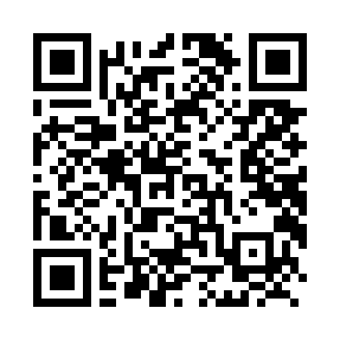


Taiteellisen työn dokumentaatio

Ennen selitystä
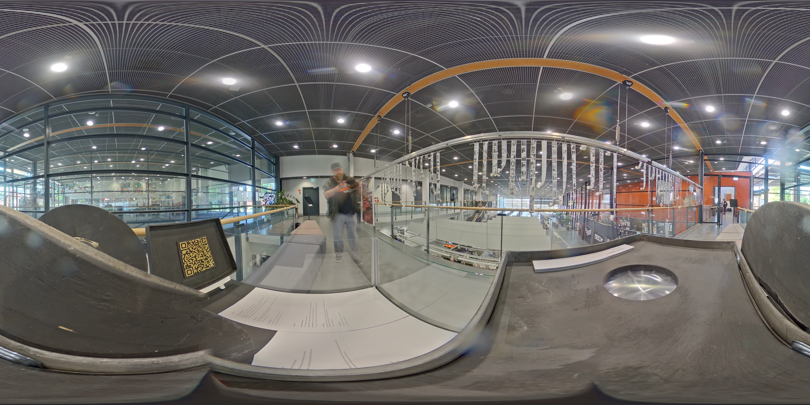
TRACES BETWEEN
TRACES BETWEEN on valokuvapäiväkirjaan, muistiin ja ajallisuuteen perustuva teoskokonaisuus, jonka ydin rakentuu vuosina 2016–2026 kuvatuista 360-panoraamoista. Näistä kuvista muodostuu kaksi erilaista kokemisen tapaa: FAST SIDE ja SLOW SIDE.
FAST SIDE tiivistää pitkän ajanjakson timelapseksi. Vuodet, paikat ja tilanteet kulkevat nopeasti toistensa läpi jatkuvana kuvavirtana. SLOW SIDE puolestaan hidastaa katsomista: katsoja avaa 3D-tulostetun QR-koodin kautta verkkopohjaisen teoksen, jossa panoraamat, tekstit ja äänet avautuvat sattumanvaraisesti ja fragmentaarisesti.
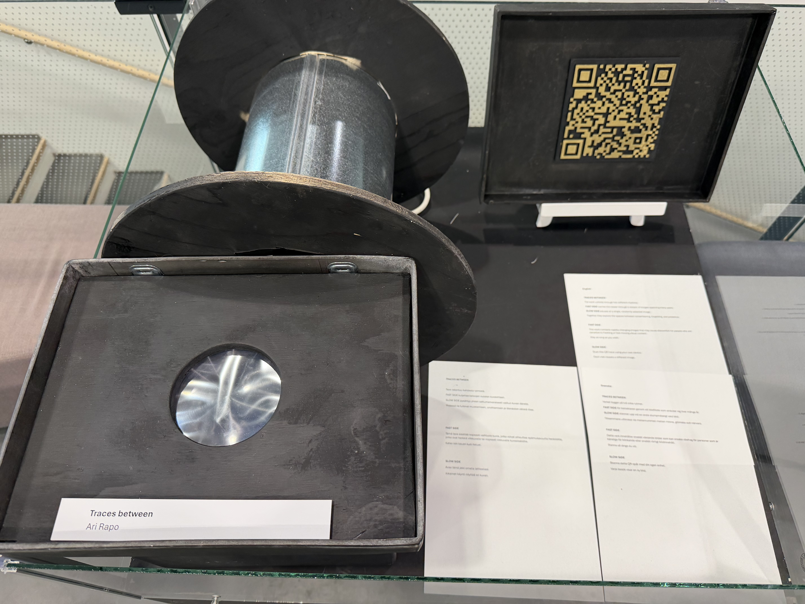
Teoksen fyysisenä ytimenä toimii 1940-luvulta peräisin oleva Osvald Hedenströmin kehitystankki. Historiallinen valokuvaesine tuo digitaaliseen kokonaisuuteen materiaalisen ja ajallisen kerroksen. 3D-tulostettu QR-koodi tekee myös digitaalisesta siirtymästä konkreettisen esineen. Raspberry Pi -tietokoneet, DIY-rakentaminen, ohjelmointi ja www-kehitys ovat osa teoksen taiteellista rakennetta, eivät vain sen teknisiä toteutusvälineitä.
Fresnel-linssi muuttaa FAST SIDE -kuvan katsomisen fyysiseksi tapahtumaksi ja korostaa katseen, etäisyyden ja kuvan välistä suhdetta.
Kokonaisuus rakentuu sarjallisuuden, toiston, sattumanvaraisuuden ja käsitteellisyyden varaan. Vaikka näyttelyyn rajattu teos muodostuu FAST SIDE- ja SLOW SIDE -kokonaisuuksista, TRACES BETWEEN on samalla avoin kontekstuaalinen teosperhe, joka jatkaa laajenemistaan uusien kuvien, kokeilujen, laitteiden ja verkkopohjaisten teosten kautta.

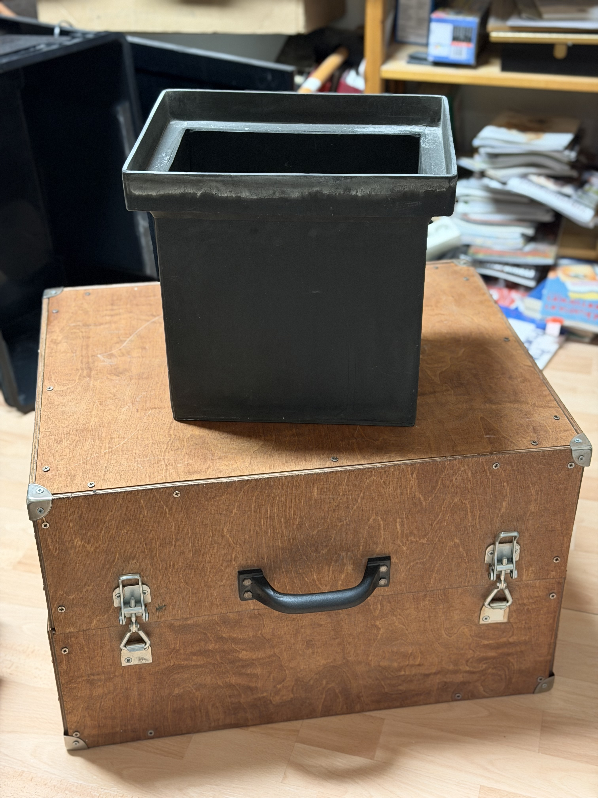
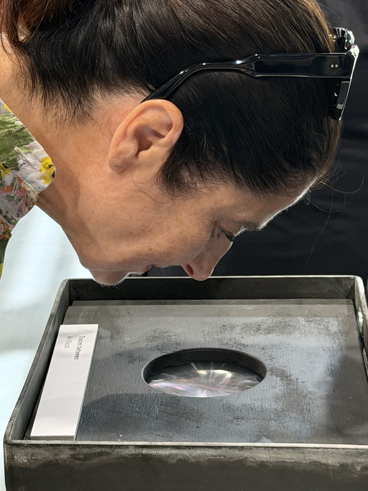
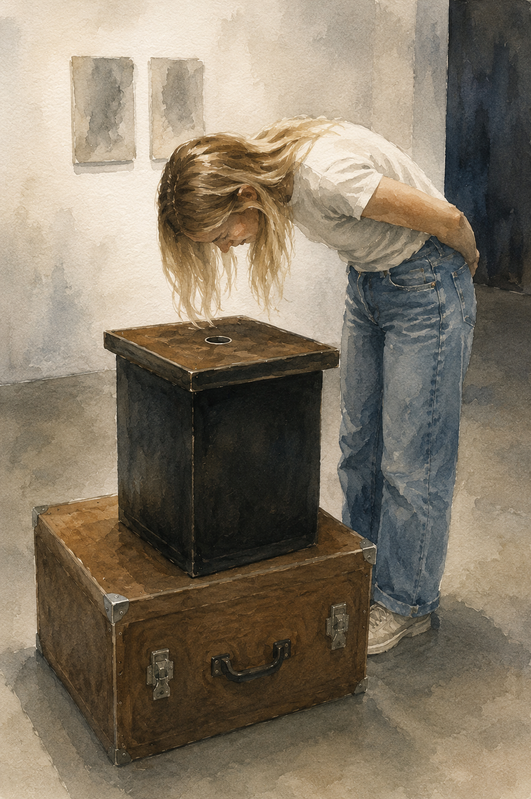
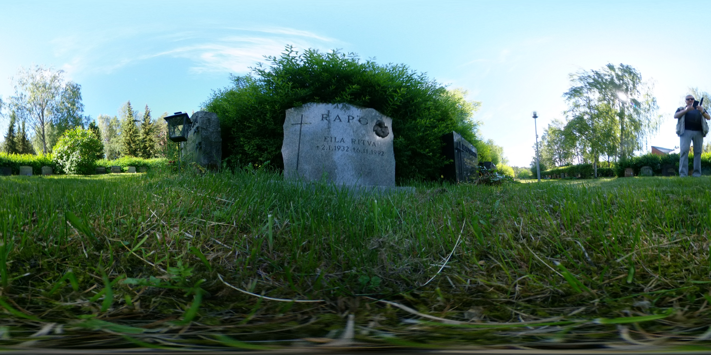

Havainto → kuva → paluu
”Valokuvapäiväkirja on tekijänsä henkilökohtainen agenda tai projekti, jossa hän jollain tavalla säännöllisesti tuottaa itselleen merkityksellisiä valokuvia. Valokuvapäiväkirja auttaa hahmottamaan maailmaa, toimii muistin tukena palauttaen mieleen tilanteita, ajatuksia, tunteita.”
Ari Rapo, Photodiary-menetelmäopas – Onnistumisen elämyksiä valokuvapäiväkirjan avulla, 2020. ISBN 978-952-93-3662-3.
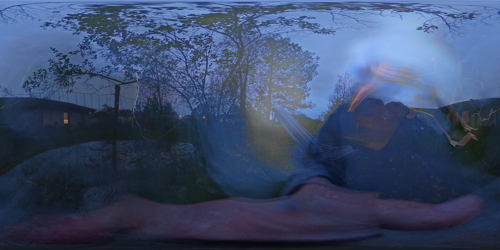

Taiteilijaidentiteetti
Suhteeni kuvaan ja teknologiaan alkoi varhain. Sain 12-vuotiaana joululahjaksi Agfamatic-kameran, mutta varsinainen käänne tapahtui vuonna 1977, kun käytin ensimmäisen kesätyöpalkkani mopon sijasta järjestelmäkameraan, Minolta SR-T 101:een. Valokuvauksesta tuli nopeasti vakava harrastus ja myöhemmin ammatti: rakensin oman mustavalkolaboratorion, työskentelin studiossa sekä lehti- ja mainoskuvauksen parissa ja toimin osakkaana mainostoimistossa. Vuonna 1988 käyttöön tullut desktop publishing avasi uuden suhteen kuvaan, typografiaan ja digitaaliseen tuotantoon.
1990-luvulla työskentely siirtyi liikkuvan kuvan suuntaan. Kouluttauduin videopuolelle ja työskentelin Yleisradiossa, minkä jälkeen tietokoneet, digitaalinen media ja verkko alkoivat vähitellen muodostua yhä tärkeämmäksi osaksi tekemistäni. Ensimmäiset kotisivuni valmistuivat vuonna 1994. 1990-luvun lopulta lähtien toimin myös IT- ja uusmedia-alan yrittäjänä, rakensin verkkosivuja yrityksille ja ohjelmoin www-julkaisuja.
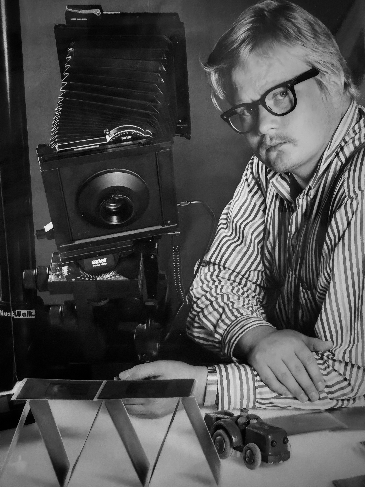
Samalla kouluttaminen ja pedagoginen työ tulivat vähitellen yhä vahvemmin mukaan. Yrittäjänä aloitettu kouluttaminen johti uraan ammatillisessa koulutuksessa, jossa olen toiminut opetuksen, projektien, kehittämisen ja ohjauksen tehtävissä useissa organisaatioissa. Näiden vuosien aikana teknologia ei ole ollut minulle vain väline, vaan jatkuvan uteliaisuuden kohde: Macintoshit, DTP, internet, uusmedia, koulutusteknologia, ohjelmointi ja myöhemmin tekoäly ovat kaikki avanneet uusia tapoja ajatella tekemistä.
Taiteilijaidentiteettini onkin rakentunut jatkuvasta liikkeestä valokuvan, teknologian, median, pedagogiikan ja kokeilemisen välillä. Minulle ominaista ei ole yhden välineen hallinta vaan uusien mahdollisuuksien tutkiminen, rinnakkaisten työskentelytapojen yhdistäminen ja omien ideoiden vieminen uusiin muotoihin. TRACES BETWEEN jatkaa tätä samaa pitkää linjaa: siinä analoginen valokuvahistoria, digitaalinen kuva, verkko, koodi, DIY-rakentaminen ja muistaminen kohtaavat samassa teoksellisessa ympäristössä.
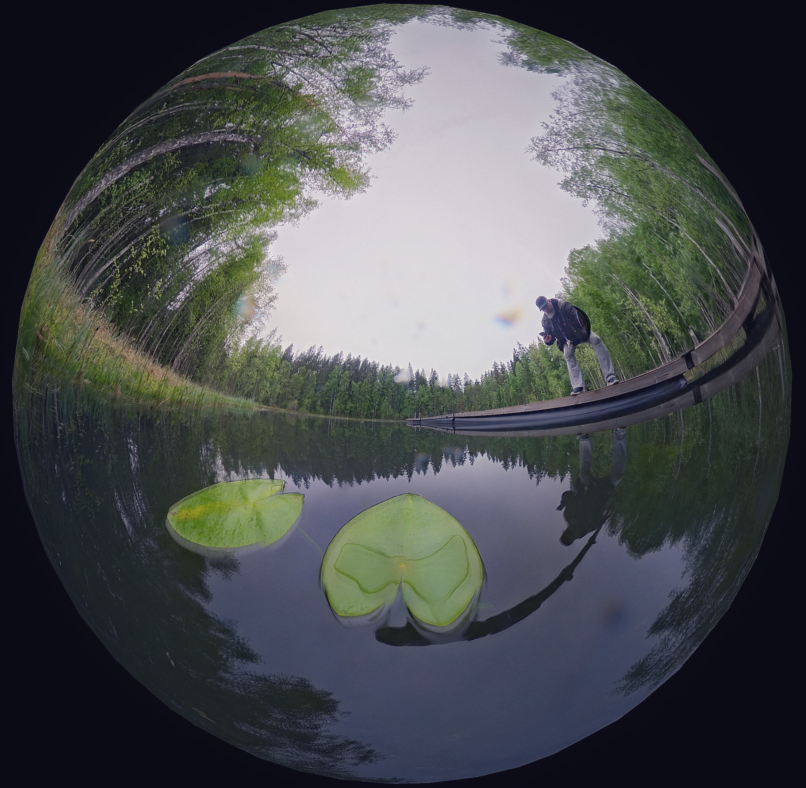
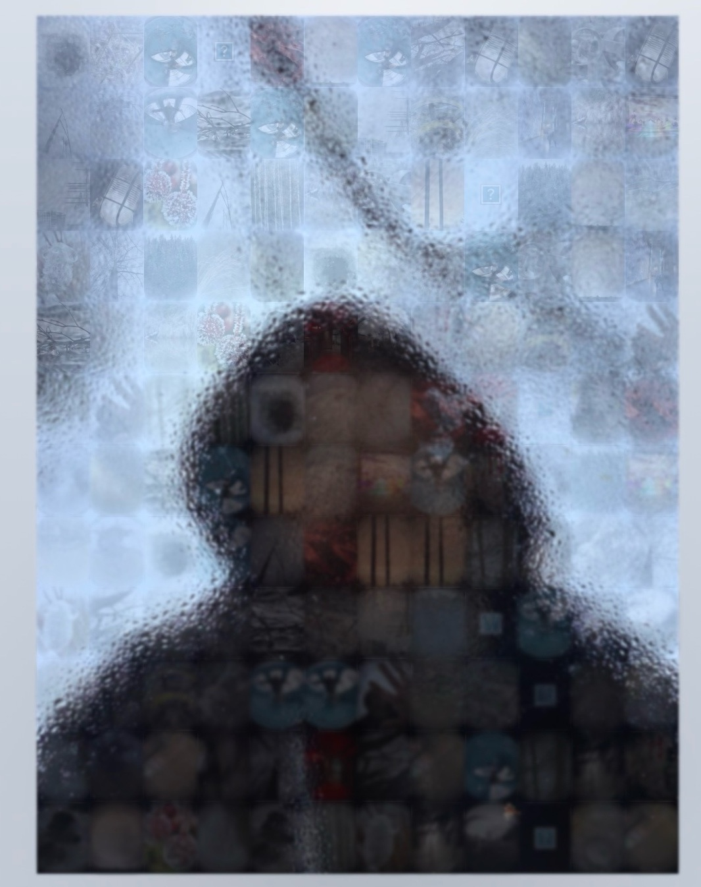

Läsnäolo / poissaolo
Valokuvapäiväkirjani oli jo osa elämääni siinä vaiheessa, kun isäni muistisairaus alkoi vähitellen tulla näkyväksi 2010-luvun jälkipuoliskolla. En osaa nimetä tarkkaa alkamishetkeä, mutta muistamisen hauraus alkoi vähitellen tulla osaksi yhteisiä kohtaamisiamme.
Dokumentoin tapaamisiamme valokuvin ja videoin. Meillä oli myös yhteisiä kuvankatseluhetkiä, joissa vanhat valokuvat toimivat muistin tukena ja keskustelun avaajina. Isä oli vähän yli 70-vuotias kirjoittaessaan käsin kaksiosaisen omakustannemuistelmateoksen Sininen taivas mustui. Hän ei ollut erityisen kirjallisesti suuntautunut eikä suuri lukija, mutta hänellä oli vahva tarve tallentaa oma elämänsä kirjaksi. Erityisen tärkeän osan muodostivat evakkomuistot.

Muistisairauden edetessä aloin ehkä aiempaa selvemmin ymmärtää, että kuvat eivät ole vain tallenteita menneestä. Ne voivat toimia muistamisen välineinä, laukaisijoina ja joskus myös korvikkeina sille, mikä muuten katoaa.
Yksi oma vahva muistoni on valokuva yhteiseltä saariretkeltä, kun olin noin 6–7-vuotias. Isä otti kuvan meistä itselaukaisimella rantakalliolla. Kuvasta on tullut minulle enemmän kuin dokumentti tapahtuneesta: se kantaa mukanaan paikan, tilanteen ja yhdessäolon tuntua.

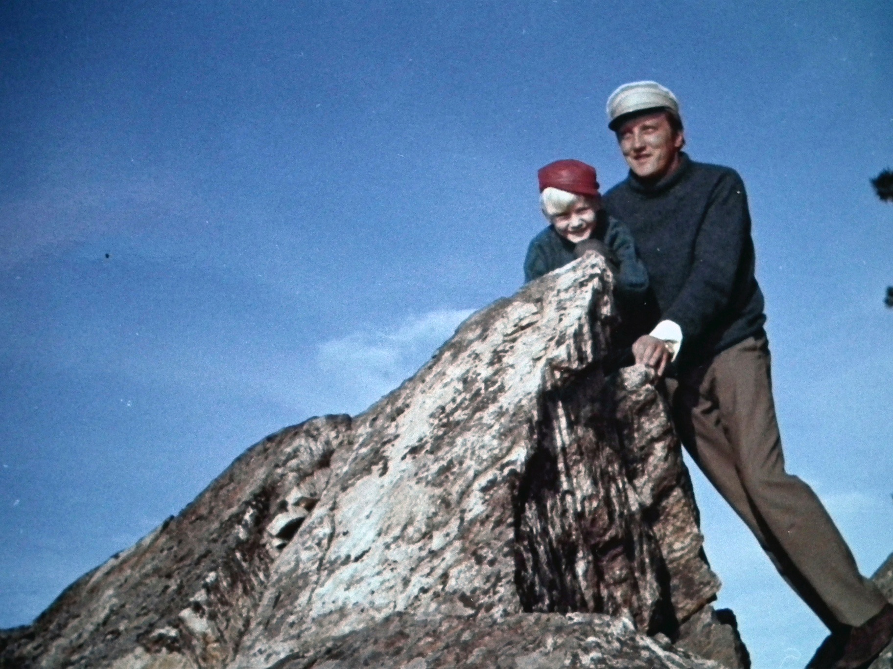
Sivupolku on myös menetelmä
Työskentelyni lähti liikkeelle kirja-ajatuksesta, mutta prosessin edetessä aloin harhailla yhä vapaammin kuvan, verkon, koodin, esineen ja installaation välillä. Vähitellen ymmärsin, ettei lopputuloksen tarvinnutkaan olla kirja.
Tämä oivallus oli minulle henkilökohtainen läpimurto. Verkkoteokseen ja käsitteellisempään työskentelyyn siirtyminen avasi uuden tavan ajatella taiteilijuuttani: teoksen ei tarvitse asettua yhden välineen tai valmiin formaatin sisään. Harhailusta tuli menetelmällinen voimavara, joka johti uudenlaiseen vapauteen tehdä teos sen oman logiikan ehdoilla.
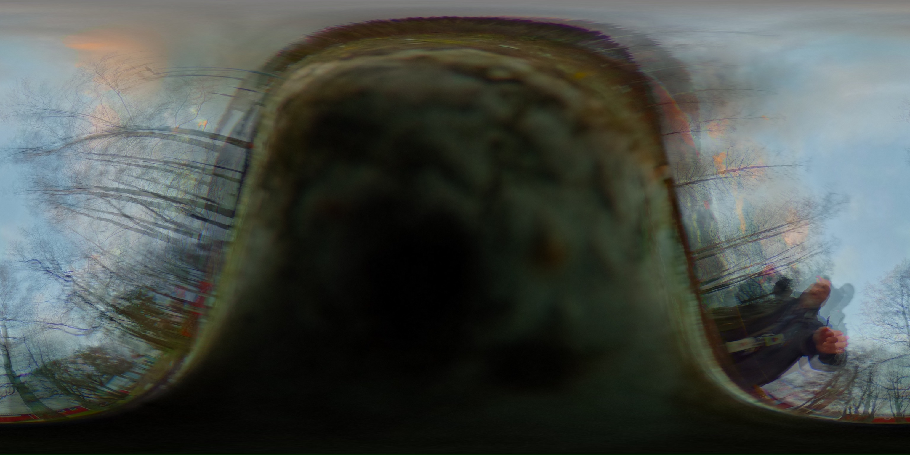
1977–2027
Yksittäiset kuvat ja kokeilut liittyvät pidempään tekemisen kaareen.
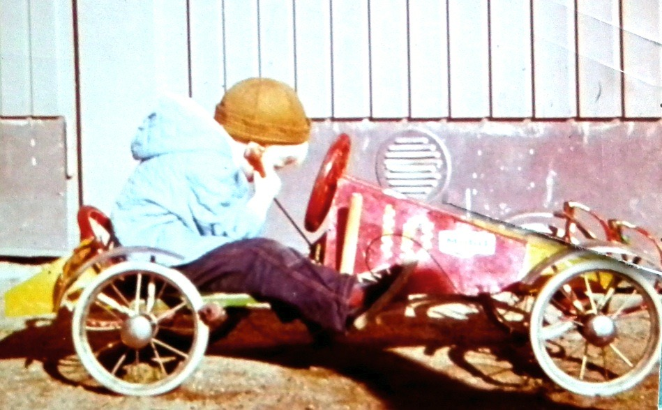
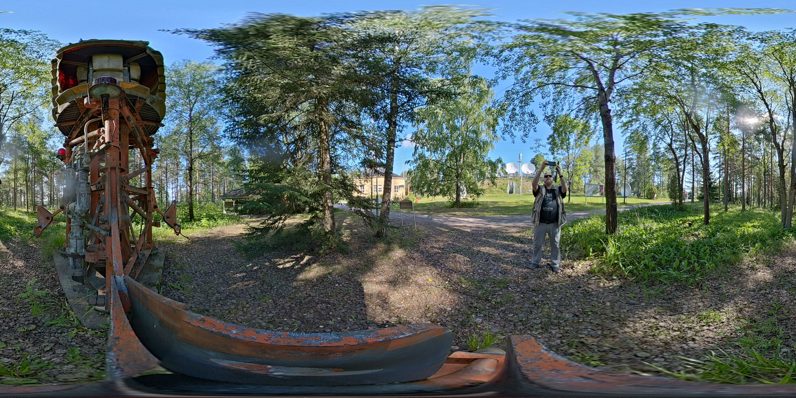
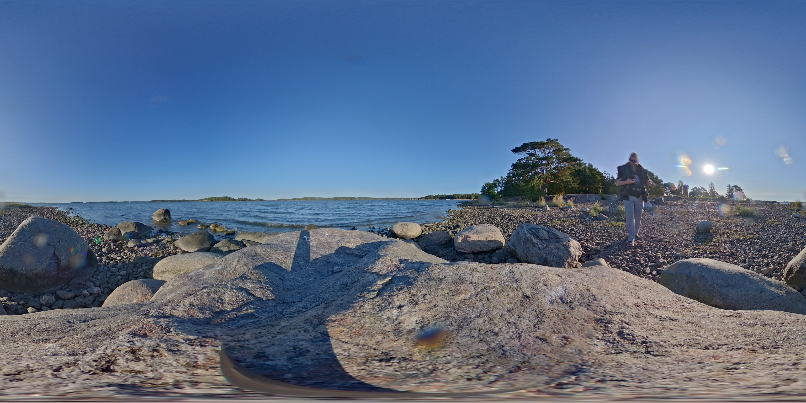
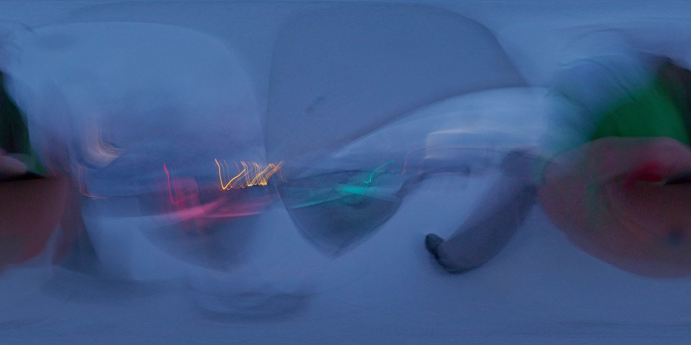
DIY / teknologia
DIY-ajattelu on kulkenut työskentelyssäni pitkään valokuvauksen rinnalla. Valokuvaus on jo itsessään teknologis-taiteellinen väline: kamera, optiikka, kemia, vedostaminen ja myöhemmin digitaalinen kuvankäsittely ovat opettaneet minulle, että tekniikkaa ei tarvitse vain käyttää valmiina, vaan sitä voi myös tutkia, muokata ja ottaa omiin käsiin.
1980- ja 1990-lukujen vaihteessa kiinnostus laajeni desktop publishingiin ja digitaaliseen kuvankäsittelyyn. Liityin internetiin vuonna 1994 ja aloin tehdä omia kotisivuja. Digikuvauksen yleistyessä 1990-luvun lopulla kuva, tietokone ja verkko alkoivat sulautua yhä tiiviimmin yhteen. Vuonna 2008 perustettu Abstraktin valokuvan yhteisö jatkoi tätä verkkopohjaista tekemistä, ja vuonna 2014 toteutin Oulussa soolonäyttelyn ubiikkinäyttöjen konseptissa.
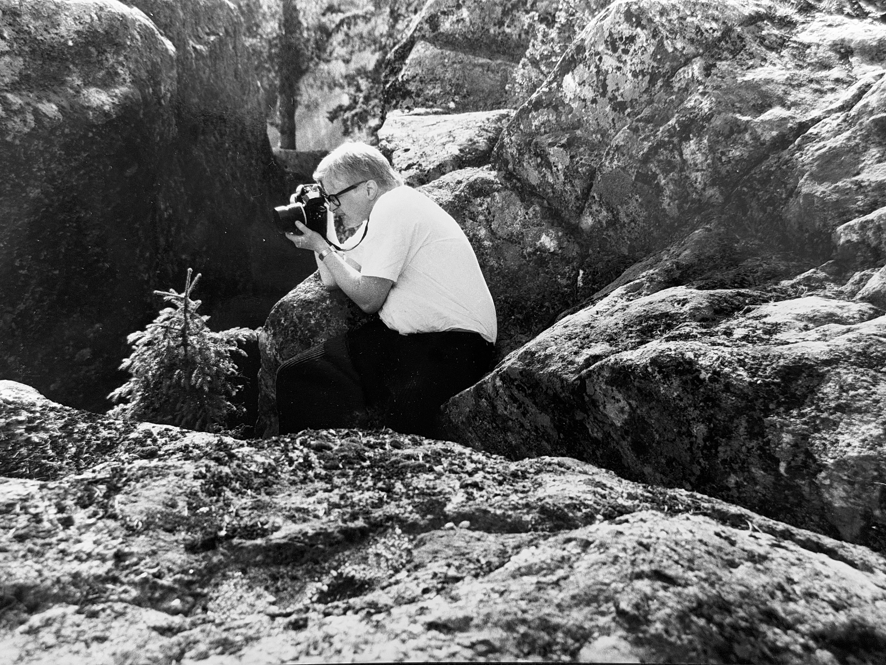
Pelialan kouluttajana työskentely vahvisti kiinnostusta vuorovaikutteisuuteen, ohjelmointiin ja digitaalisiin ympäristöihin. Koodauksen opettelu johti vähitellen siihen, että teknologia alkoi olla yhä selvemmin osa omaa taiteellista prosessiani. Raspberry Pi -tietokoneet, tietokoneiden rakentelu, verkkopalvelut ja 3D-tulostus ovat kaikki jatkoa samalle uteliaisuudelle: halulle ymmärtää, miten väline toimii, ja mitä tapahtuu, kun sen purkaa, rakentaa uudelleen tai käyttää toisin kuin alun perin oli tarkoitettu.
DIY-henki ei merkitse minulle pelkkää itse tekemistä. Se on tapa ajatella: kokeilla, yhdistellä, opetella uutta ja rakentaa tarvittaessa oma väline teoksen ehdoilla. TRACES BETWEEN jatkaa tätä linjaa hyvin suoraan.

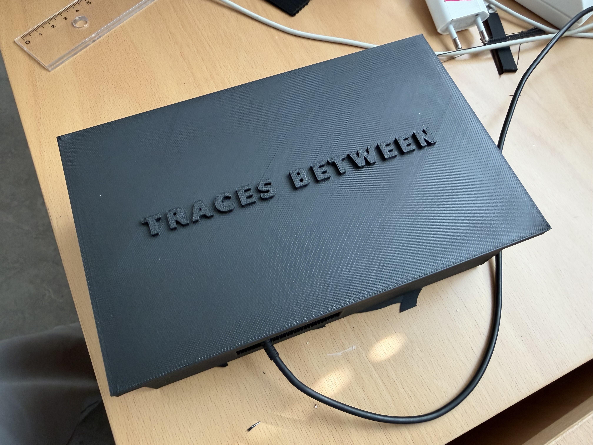

360-kuvaus affordanssina
360-kuvaus tuli työskentelyyni aluksi pedagogisen käytön kautta, mutta vähitellen aloin nähdä siinä myös taiteellisia mahdollisuuksia. Minua ei kiinnostanut menetelmä siksi, että se olisi teknisesti ”parempi” tapa kuvata, vaan siksi, että sillä on oma erityinen affordanssinsa: se tallentaa ympäristön eri tavoin kuin tavallinen rajattu valokuva ja antaa kuvalle myöhemmin uusia katsomisen, rajaamisen ja tulkinnan mahdollisuuksia.
360-kuvassa kuvaaja ei päätä kaikkea kuvaushetkellä. Osa valinnoista siirtyy myöhempään katsomiseen, jolloin kuva voi avautua uudelleen eri suuntiin ja eri rajauksina. Tämä sopii hyvin omaan työskentelyyni, jossa muistaminen, sattuma, palaaminen ja uudelleentulkinta ovat keskeisiä. Minulle 360-kuva ei siis ole tekninen erikoisuus, vaan taiteellinen väline, jonka ominaisuudet mahdollistavat toisenlaisen suhteen tilaan, aikaan ja muistiin.

Fresnel-linssi
Fresnel-linssi on ohut, levymäinen linssi, jonka suurentava vaikutus syntyy pinnan rengasmaisesta rakenteesta. TRACES BETWEEN -teoksessa se toimii katsomisen välineenä: se muuttaa kuvan tarkastelun fyysiseksi kokemukseksi ja korostaa katsojan, etäisyyden ja kuvan välistä suhdetta. Linssi ei ole vain tekninen osa, vaan osa teoksen materiaalisuutta ja katsomisen tapaa.
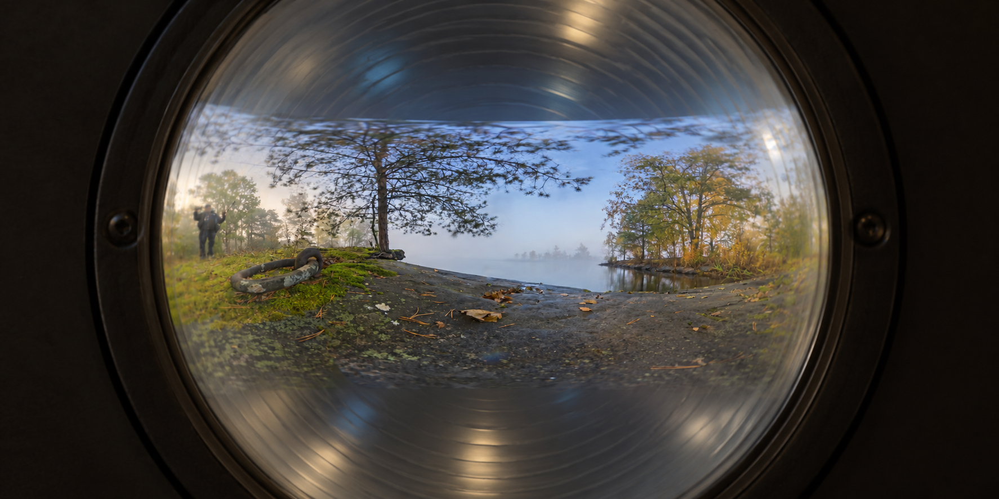
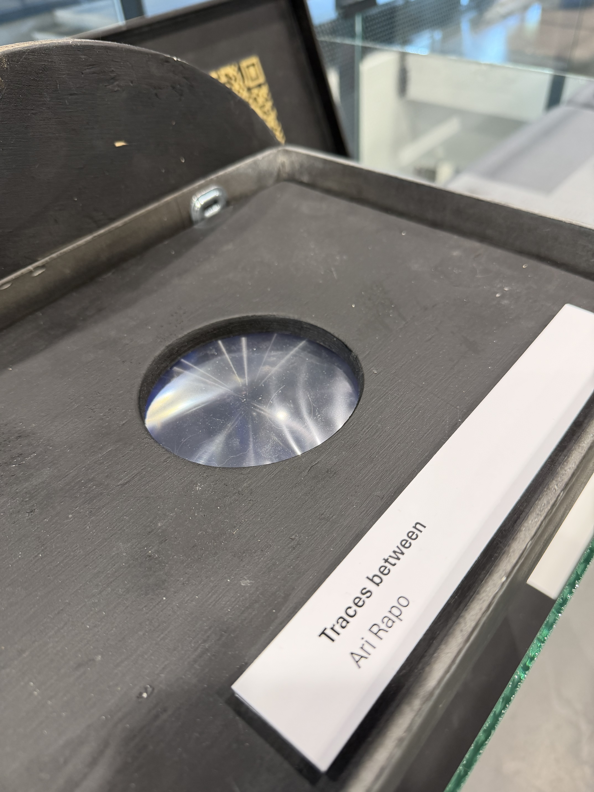
Fyysisestä digitaaliseen
TRACES BETWEEN -teoksessa QR-koodi ei ole vain käytännöllinen linkki verkkosisältöön. Se toimii käsitteellisenä porttina fyysisen ja digitaalisen teoksen välillä. Katsoja kohtaa ensin materiaalisen esineen, jonka kautta hän siirtyy toiseen tilaan: verkkoteokseen, satunnaisuuteen, kuviin, teksteihin ja ääniin. QR-koodi merkitsee siis siirtymää yhdestä todellisuuden tasosta toiseen.
Osoitteella on pinta
Samalla 3D-tulostettuna QR-koodi muuttuu itse esineeksi. Tavallisesti lähes näkymätön, tekninen käyttöliittymäelementti saa painon, pinnan ja materiaalin. Digitaalinen osoite muuttuu käsin kosketeltavaksi objektiksi.
Tässä mielessä QR-koodi ei ole vain väline, vaan osa teoksen käsitteellistä rakennetta: portti, merkki ja materiaalinen jälki samanaikaisesti.

Paluu kuvaan
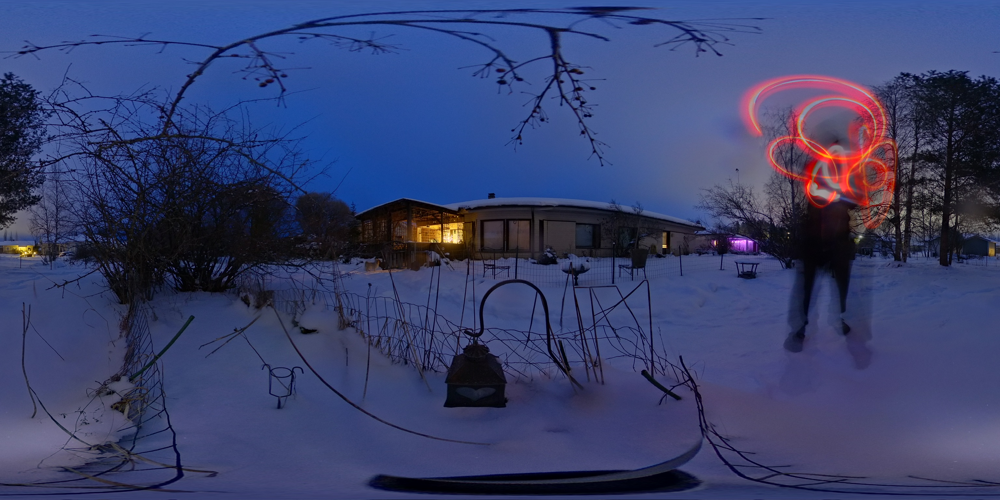
Uteliaisuus, kokeilunhalu, sattumanvaraisuus, merkityksellisyys ja toisto ovat muistikokemukseni raaka-aineita.
Palaan kuviin yhä uudelleen. Jotakin palautuu, jotakin muuttuu. Jokainen paluu jättää uuden jäljen.
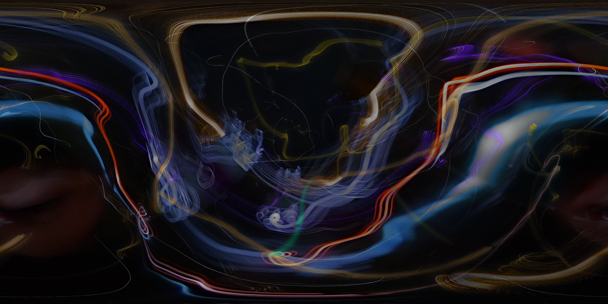
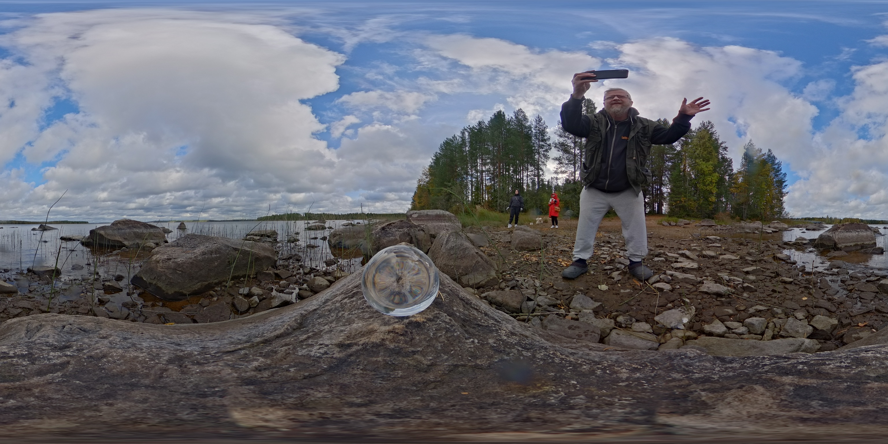

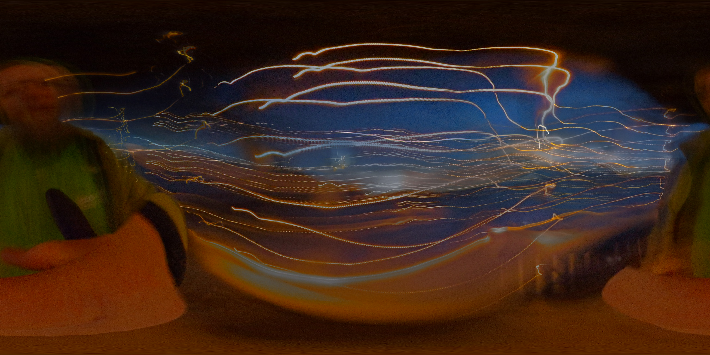
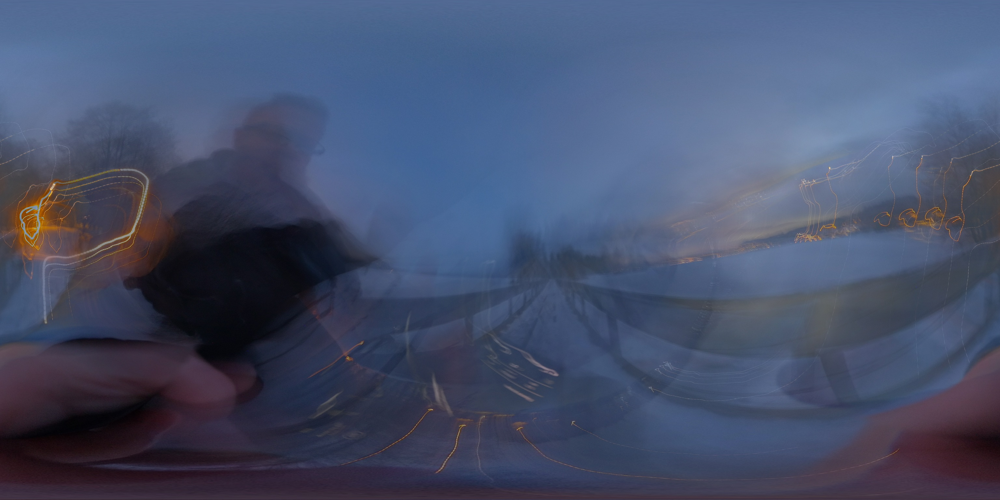
QR-hakemisto

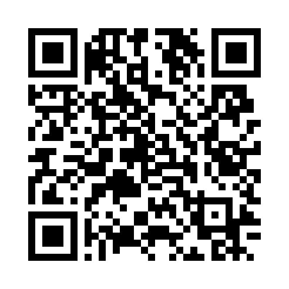
Valokuvataiteilija, mediataiteilija ja pedagogi.
Suomi · s. 1962
Työskentelyni perustuu pitkäkestoiseen havainnointiin ja vuodesta 2010 päivittäin pitämääni valokuvapäiväkirjaan. Tutkin muistia, aikaa, toistoa ja läsnäoloa dokumentaarisen, kontemplatiivisen ja kokeellisen valokuvauksen keinoin.
Kävelen, havainnoin, kerään ja palaan. Annan kuvien kertyä ajan myötä. Niiden merkitykset muodostuvat ajallisista kerrostumista, pienistä vaihteluista ja rinnastuksista.
Valokuva on tekemiseni ydin. Sen rinnalla työskentelen tekstin, liikkuvan kuvan, verkkoympäristöjen ja tilallisten rakenteiden kanssa. Minua kiinnostaa, miten kuva voi muuttua ympäristöksi, jäljeksi tai kynnykseksi.
Valokuvapäiväkirjaan pohjautuva teoskokonaisuus liikkuu kuvan, verkkoteoksen ja installaation välillä. Vuosien 2016–2026 360-panoraamat, historiallinen valokuvaesine, liikkuva kuva ja verkkopohjaiset muistijäljet tuovat samaan tilaan erilaisia ajallisia rytmejä.
Itse rakennetut tekniset ympäristöt ovat osa teoksen materiaalia ja ajattelua. Analogiset valokuvausvälineet, mikrotietokoneet, optiikka ja koodi jatkavat samaa kokeilevaa työskentelyä.
Opetuksen ja ohjauksen parissa tekemäni työ tukee reflektiivisiä, kokemuksellisia ja pitkäkestoisia taiteellisia menetelmiäni.
Photodiary-menetelmäopas – Onnistumisen elämyksiä valokuvapäiväkirjan avulla
Raponet Photodiary, 2020
ISBN 978-952-93-3662-3
arirapo [at] photodiary.guru
Kolofoni
TRACES BETWEEN
Ari Rapo
Taiteellisen työn dokumentaatio · zine
Version päiväys: 23.10.2026
Toteutettu verkkosisältönä. Sama HTML/CSS-lähde toimii verkkoversion, PDF:n ja printatun zinen pohjana. Dokumentaatio on toteutettu tekijän alkuperäistä opinnäytetyöideaa vastaavana zinenä. Tekoälyä on käytetty apuna zine-rakenteen ja verkkototeutuksen kehittämisessä, koodin tarkistamisessa, tekstien luonnostelussa ja muotoilussa sekä versionhallinnassa. Sisällölliset ja taiteelliset ratkaisut, aineiston kuratointi, määrittely, promptaus ja testaus ovat tekijän ohjaamia ja hyväksymiä. Valokuvat ovat tekijän omia lukuun ottamatta alla mainittuja kuvia; sivun 22 vasemmanpuoleisen Fresnel-kuvituksen muokkauksessa on käytetty tekoälyä.
photodiarygame.com/zine/traces-between/
A4 vaaka · kierresidonta
Osa sivuista lasertulosteita, valokuvasivut mustesuihkutulosteita.
Kuvaajat: sivu 15 P. Rapo · sivu 19 S. Salmi.
© Ari Rapo 2026. All rights reserved.